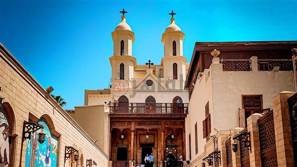
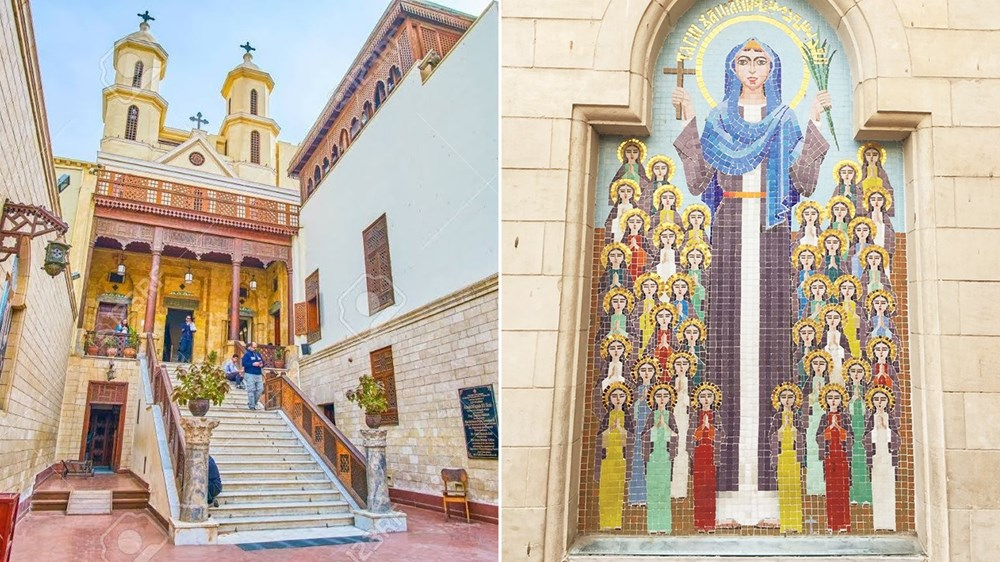
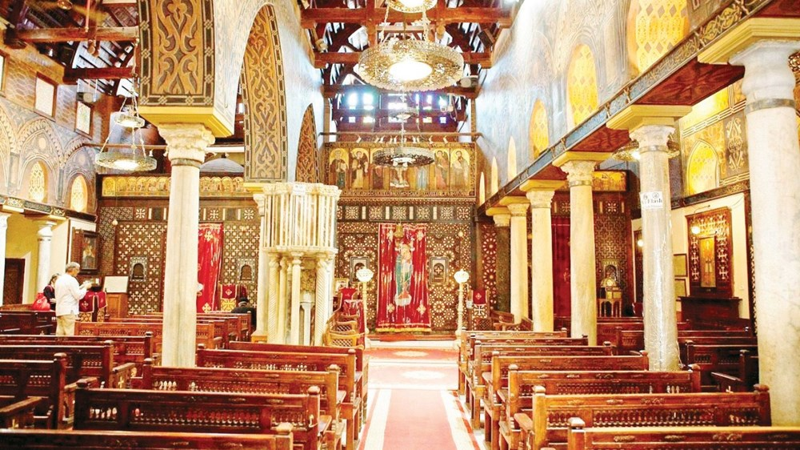
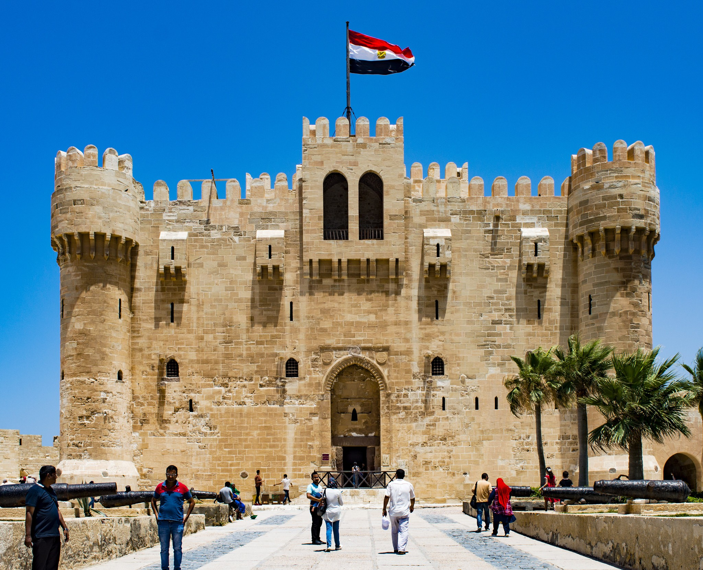
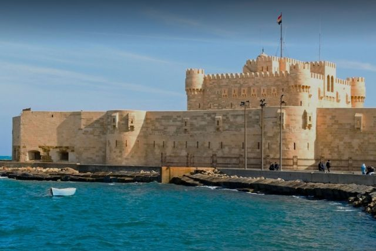
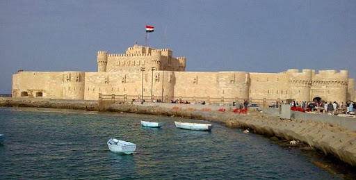

تقع الكنيسة المعلقة في حي مصر القديمة، وهي على مقربة من جامع عمرو بن العاص، وتذهب بعض الروايات إلى أن الكنيسة بنيت على أنقاض مكان احتمت فيه العائلة المقدسة في أثناء السنوات التي قضوها في مصر؛ هروباً من الرومان.

سؤال مهم: لماذا سميت بالمعلقة؟
وقد جددت الكنيسة عدة مرات، ففي عهد الخليفة العباسي هارون الرشيد تم تجديدها، ثم جددت مرة أخرى في عهد الخليفة العزيز بالله الفاطمي، وقد تم إطلاق اسم المعلقة على الكنيسة؛ لأنها بنيت على برجين من الأبراج القديمة للحصن الروماني "حصن بابليون".

وتعتبر الكنيسة المعلقة من أقدم الكنائس التي لا تزال باقية في مصر، وقد دفن بها عدد من رجال الدين المسيحي في القرنين الحادي عشر، والثاني عشر الميلاديين، ولا تزال توجد لهم صور وأيقونات بالكنيسة تضاء لها الشموع.

في عهد مَن مِن الخلفاء العباسيين تم تجديد الكنيسة المعلقة؟
هارون الرشيدبنيت هذه القلعة في عهد السلطان الملك قايتباي مكان منارة الإسكندرية القديمه في أثناء العصر المملوكي، وهى عبارة عن بناء مستطيل طوله 60 متراً، وعرضه 50 متراً، وقد تم الانتهاء من البناء بعد عامين من تاريخ الإنشاء، ولأن القلعة تعد من أهم القلاع على ساحل البحر الأبيض المتوسط، فقد اهتم بها سلاطين وحكام مصر على مر العصور التاريخية، ففي العصر المملوكي اهتم السلطان قنصوه الغوري بالقلعة (قايتباي) اهتماماً شديداً، وزاد من قوة حاميتها وشحنها بالسلاح والعتاد.

وقد استخدم العثمانيون هذه القلعة لحمايتهم فجعلوا بها طوائف من الجند والمشاة والفرسان والمدفعية ولما تولى محمد على باشا حكم مصر، تولى تجديد أسوار القلعة وتقويتها وتزويدها بالمدافع، وقد قامت لجنة حفظ الآثار العربية بعمل العديد من الإصلاحات والتجديدات في أسوار وطوابق القلعة.

وقد بنيت القلعة على مساحة قدرها 17550 متراً، وهي عبارة عن مجموعة من الأسوار مقسمة على سورين من الأحجار الضخمة، ولها برج رئيسي يقع بالناحية الشمالية الغربية، وبناء يتكون من ثلاثة طوابق مربعة الشكل يخرج من كل ركن من أركانه الأربعة برج دائري، يرتفع عن سطح البرج الرئيسي وقد بنى البرج بالحجر الجيري، وتعد القلعة من أهم المناطق الأثرية المصرية التي يرتادها السائحون من مختلف بلدان العالم.

هل تعلم؟ القلعة كانت تحتوي على "صهريج" (خزان مياه ضخم) مبني أسفلها، ليضمن وجود مياه شرب عذبة تكفي الجنود لشهور طويلة في حالة تعرض القلعة لأي حصار من الأعداء من جهة البحر.
من هو السلطان المملوكي الذي اهتم بالقلعة اهتماماً شديداً وزاد من حاميتها؟
محمد علي باشا